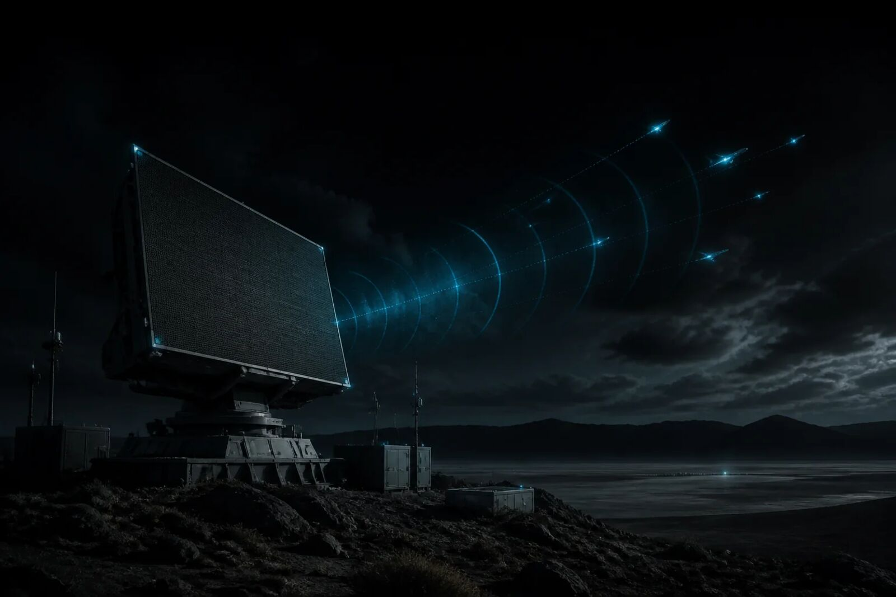
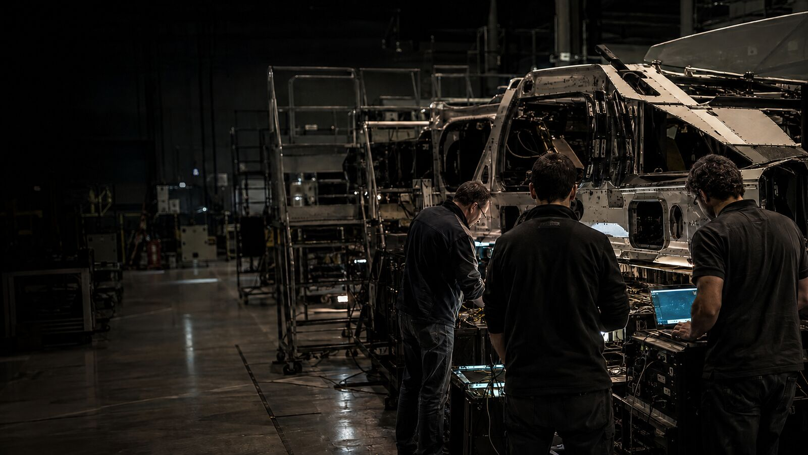
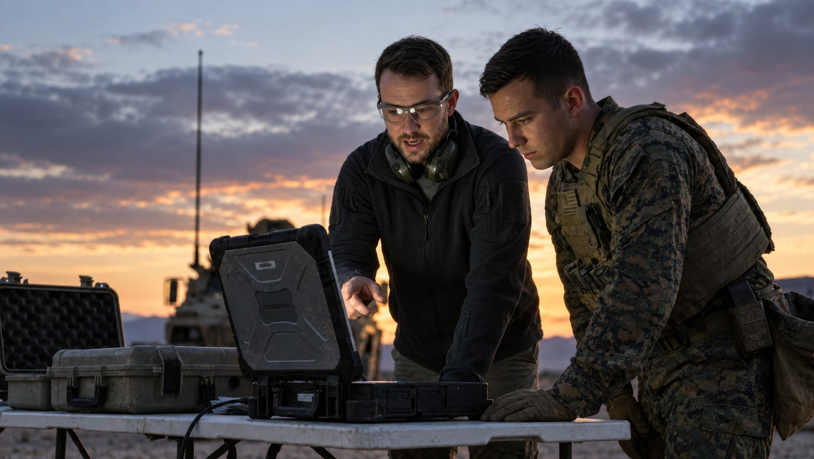

Missions are won at the seams.
Astrion engineers, builds, tests and integrates the products and systems our National Security depends on. Embedded with our customers, we turn mission knowledge into advanced technology and connected capability, closing gaps between systems, platforms and domains.
Build the missionFrom air defense to lunar operations.
Inside customer programs, our teams help develop, field and sustain critical capability. Six mission segments, twenty-one solution areas, and the technical work behind each.
Explore the portfolio-
01

Integrated Air and Missile Defense
Connect sensors, battle management and effectors against air and missile threats.
03 solution areas -
02

Lifecycle Management and Cyber Warfare
Test, modernize and sustain critical systems as technology and cyber threats change.
04 solution areas -
03

Layered Defense, Autonomous Warfare & Integrated Fires
Coordinate autonomous platforms, sensors and fires across a layered defense.
03 solution areas -
04
Space Warfighting
Support mission operations, space access and control in contested environments.
04 solution areas -
05

Critical Infrastructure Protection
Strengthen the energy, transportation and industrial systems missions depend on.
03 solution areas -
06
Exploration and Lunar Presence
Advance launch readiness, mission assurance and infrastructure for sustained lunar operations.
04 solution areas
Twenty-one solution areas. Every one closes a seam.
Each solution area states the promise it makes, the mission it serves, and the ways Astrion plays. Filter by segment, or read the full set.
Integrated Air and Missile Defense
03 solution areas-
IAMD / 01
BMC2
Directing the layers of the missile defeat fight at the speed of battle.
Strategic promiseConnect and orchestrate the IAMD enterprise to optimize theater and strategic defense at the scale and complexity of today's threat.
PurposeIntegrate command, control, communications, computers, intelligence, surveillance, and reconnaissance into a resilient BMC2 environment that gives commanders a trusted operational picture and the tools to act on it.
Ways to play- Connect the enterprise
- Fuse data into decisions
-
IAMD / 02
Sensors & Sensor Fusion
Trusted tracking using modern tip-and-cue webs for maximum real-time coverage.
Strategic promiseTrack the threat from left-of-launch to elimination.
PurposeEnhance the quality, veracity, and precision of today's sensor networks while preparing for the evolution of tomorrow's sensing capabilities. Combine multi-phenomenology insights to ensure kill web closure.
Ways to play- Integrate and modernize sensors and sensor networks
- Correlate, assess, and validate actionable tracks
-
IAMD / 03
Effector Solutions
Layered defense for the theater and the homeland.
Strategic promiseOptimize the kill chain. Expand defeat options. Deliver affordable capacity.
PurposeIntegrate kinetic and non-kinetic effectors into strategic layered defenses that respond to theater and strategic threats, including missiles, aircraft, and emerging kinetic threats to the U.S. and its allies.
Ways to play- Integrate layered effects
- Scale affordable defeat capacity
Lifecycle Management and Cyber Warfare
04 solution areasAmerica's mission readiness and modernization business.
-
LCM & CW / 01
Cyber Warfare
Cyber operations, EW, and cryptology, united for mission assurance.
Strategic promiseSeize and hold the initiative in the cyber domain.
PurposeMake cyber warfare operationally decisive. Unite cyber operations, EW, and cryptology to preserve mission assurance, freedom of action, and combat advantage across contested domains and connected environments.
Ways to play- Hunt, harden, and recover across enterprise and contested environments
- Shape the fight
-
LCM & CW / 02
Test, Evaluation & Training
Realistic ranges, digital environments, and operational scenarios.
Strategic promiseAccelerate test-to-field. Generate V&V evidence. Build mission confidence.
PurposeTest, evaluate, and train the force in realistic ranges, digital environments, and operational scenarios, turning mission data into the evidence, insight, and warfighter confidence needed to reduce risk, accelerate fielding, and prevail in contested environments.
Ways to play- Mimic real-world complexity in realistic ranges; modernize and scale test infrastructure
- Advance test environments for next-generation weapon systems
-
LCM & CW / 03
Sustainment & Modernization
Ready for today's mission, prepared for tomorrow's fight.
Strategic promiseAssure mission readiness. Accelerate modernization. Enable combat overmatch.
PurposeContinuously test, sustain, modernize, and validate the mission systems that make up America's Arsenal of Democracy, so warfighters stay ready for today's mission and prepared for tomorrow's fight.
Ways to play- Sustain and modernize existing weapon systems
- Integrated multi-domain capabilities for mission-ready advantage
-
LCM & CW / 04
Next Generation Weapon Systems
Emerging technology, turned into mission-ready capability.
Strategic promiseRapidly integrate new capabilities. Quantify risk. Scale mission advantage.
PurposeConnect sensors, platforms, software, and operators across domains to give the Department the speed, interoperability, and technological advantage needed to deter and prevail against near-peer threats.
Ways to play- Integrate new capabilities at mission speed for effects at range and accuracy
- Deliver overmatch in contested environments
Layered Defense, Autonomous Warfare & Integrated Fires
03 solution areas-
LDAWIF / 01
Layered Defense
Innovative solutions to complex threats.
Strategic promiseCreate insurmountable tactical challenges for the enemy.
PurposeDevelop, deploy, and sustain layered defensive systems for C-UAS that operate across the spectrum of conflict, from the homeland to hostile environments.
Ways to play- Mission assurance
- Training
- Test and evaluation
-
LDAWIF / 02
Autonomous Warfare
The new modern battlefield.
Strategic promiseDeliver smart and independent capability to the fighting edge.
PurposeEnable modern autonomous warfare through intelligent systems, resilient communications, and robust system design.
Ways to play- All-domain autonomy
-
LDAWIF / 03
Integrated Fires
Connecting the battlefield.
Strategic promiseDeliver precision targeting and rapid counter-barrage capability that closes the sensor-to-shooter gap across every echelon.
PurposeFuse targeting, sensor, and fires data into a single engagement picture, enabling precision strikes and rapid counter-battery response at the point of contact.
Ways to play- Create the combat information layer
Space Warfighting
04 solution areas-
Space / 01
Global Mission Operations
Mission integration solutions that turn space data into decision advantage.
Strategic promiseDeliver a mission-ready, data-connected space enterprise that turns sensing, targeting, threat, and cyber information into faster, trusted decisions.
PurposeIntegrate proven digital engineering, AI-enabled mission solutions, and test capabilities across space sensing, targeting, missile tracking, security, and cybersecurity to optimize the mission systems the U.S. and its allies depend on for space support to operations.
Ways to play- Mission operations
- Targeting & tracking
- Space awareness
- Cyber operations
-
Space / 02
Space Control
Integrating EW, OW, and Space C2 for space superiority.
Strategic promiseEnable joint and coalition decision advantage by integrating EW, OW, and Space C2 into a resilient, AI-enabled mission-engineering ecosystem, connecting space-defined kill webs and multi-domain effects from detection through execution.
PurposeTurn operational credibility, mission access, and engineering depth into reusable Space Control solutions that close integration seams and improve decision speed across the future fight.
Ways to play- Electronic warfare
- Space C2
- Orbital warfare
- Mission engineering + AI
-
Space / 03
Space Access
Delivering responsive launch and engineering modernization.
Strategic promiseEnsure the U.S. and its allies can deliver payloads to orbit when and where they need to, while enhancing the space vehicles already on orbit.
PurposeBuild assured access to orbit through resiliency, availability, and reliability, from the range through ascent, payload deployment, on-orbit servicing, and global mission operations.
Ways to play- Launch vehicle certification
- On-orbit servicing
- Range operations and next-gen range services
-
Space / 04
Space Energy & Wargaming
Winning in, from, and to space.
Strategic promiseOwn the energy advantage in orbit: power, propulsion, and the wargaming tools to prove it before the fight.
PurposeAdvance chemical, photovoltaic, and nuclear power and propulsion across every orbital regime, and deliver the modeling, simulation, and visualization tools that let U.S. warfighters and allies design, train to, and validate future force structure.
Ways to play- Space operational energy: power and propulsion
- EL-CID wargaming and force structure analysis
Critical Infrastructure Protection
03 solution areas-
CIP / 01
Transportation Infrastructure
Building resilience into the systems that move America.
Strategic promiseModernize and safeguard the systems that move America through mission-threaded engineering, test, safety, and cyber resilience.
PurposeAdvance mission continuity across FAA, TSA, CBP, airports, ports, and selected maritime systems as transportation becomes more connected, automated, and cyber-dependent.
Ways to play- FAA and the National Airspace System
- Readiness and safety
- Cyber-physical assurance
- Critical site security
-
CIP / 02
Energy Infrastructure
Resilience for high-consequence energy systems.
Strategic promiseHarden high-consequence energy systems with nuclear-grade engineering, cyber assurance, test, and operate-through resilience.
PurposeEquip NRC, DOE/NNSA, national labs, utilities, SMR developers, and other energy owners to assess, validate, and sustain high-consequence systems across cyber, safety, reliability, and operations.
Ways to play- Nuclear cyber
- Energy resilience
- OT/ICS assurance and digital twin
- Nu-Clear and SMRs
-
CIP / 03
Defense Industrial Base Infrastructure
Sustaining the industrial base behind defense.
Strategic promiseConvert cyber-physical risk into mission evidence, readiness decisions, and resilient operations for defense-critical operators.
PurposeSecure mission continuity across DoD, depots, shipyards, industrial facilities, production sites, and defense suppliers by mapping dependencies, testing degraded operations, and validating recovery.
Ways to play- Site resilience
- Industrial digital twin
- Production readiness
- OT assurance, C-UAS, and T&E
Exploration and Lunar Presence
04 solution areasLunar mission assurance for building the next world.
-
E&LP / 01
Launch, Landing & Mission Readiness
Flight readiness, multi-vendor integration, and digital engineering.
Strategic promiseKnow the risk. Assure the mission before it launches.
PurposeIntegrate multi-provider systems, verify safety-critical interfaces, and convert NASA and Rapid Capabilities Office mission heritage into reusable assurance, V&V, and digital-engineering offerings.
Ways to play- Flight safety tools: ORCA and FAWS
- Multi-vendor mission integration built on terrestrial capabilities
-
E&LP / 02
Lunar Construction & Surface Infrastructure
Safe habitation and expansion on the Moon and beyond.
Strategic promiseSafely site, operate, and protect infrastructure on the Moon.
PurposeSupport safe habitation and expansion on the Moon and beyond by capturing, characterizing, and mitigating power and infrastructure risk as part of an integrated lunar architecture.
Ways to play- Dust and debris risk modeling for lunar habitation and infrastructure
- IPEx RASSOR lunar site prep demonstration with NASA
-
E&LP / 03
Lunar Autonomy & Surface Operations
Assure, prove, operate, commercialize.
Strategic promiseOperate the Moon as a managed system-of-systems.
PurposeCoordinate crewed and uncrewed assets, landing zones, hazard areas, traffic routes, power and comms nodes, logistics, and sustainment using bounded autonomy and trusted operational data.
Ways to play- Situational awareness across crewed and uncrewed vehicles
-
E&LP / 04
Testing, Modeling, Simulation & Mission Assurance
Assurance for building the next world.
Strategic promiseProve capability in mission-relevant environments.
PurposeModel, simulate, test, and validate payloads, autonomy, and mission systems before deployment, so NASA and commercial providers are ready for the hostile space environment.
Ways to play- Modeling, simulation, and HWIL testing for spaceflight avionics
- Mission assurance and test to predict real-world performance and ops needs
We deliver proof, not promises.
Astrion stands at the intersection of innovation and operational reality. We turn breakthrough ideas into field-ready capability: fast, proven, and mission-informed.
See the lifecycle
Engineer it. Prove it. Keep it current.
Engineering discipline, software, AI, and mission expertise combine so a capability performs in the field the way it performed in test.
- 01 · EngineerDesign and model
Requirements, architecture, and digital models built against the mission, not the demo.
- 02 · IntegrateSystems and terrain
Sensors, effectors, software, and platforms brought together across domains and services.
- 03 · ProveTest and evaluation
Validated in the lab, on the range, and in the field under conditions that mirror the fight.
- 04 · SustainLifecycle and modernization
Kept current as threats, data, and missions change.
Bring us a hard mission problem.
Program offices, primes, and technology partners: start with a conversation about where you need capability proven, not just promised.
Visit astrion.us